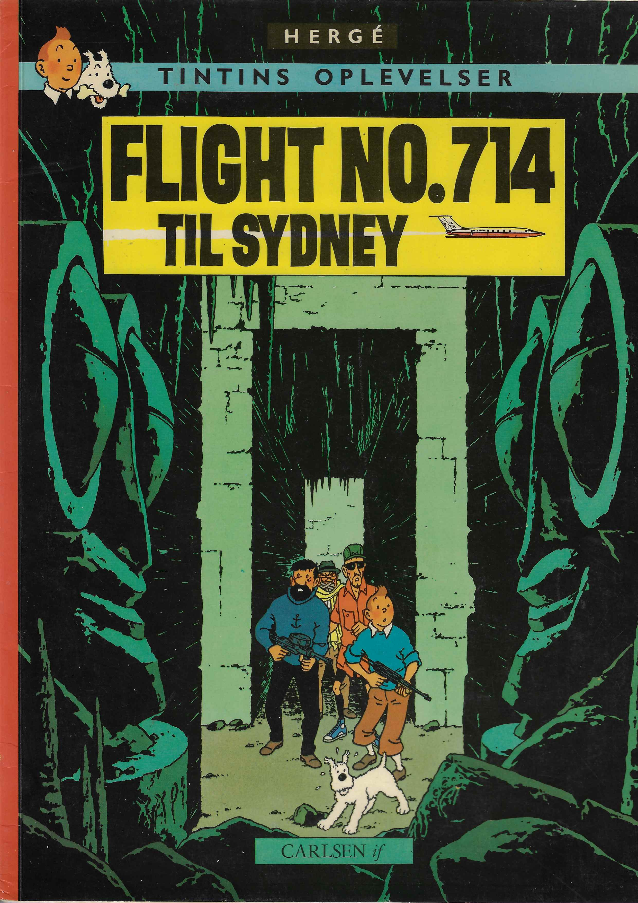
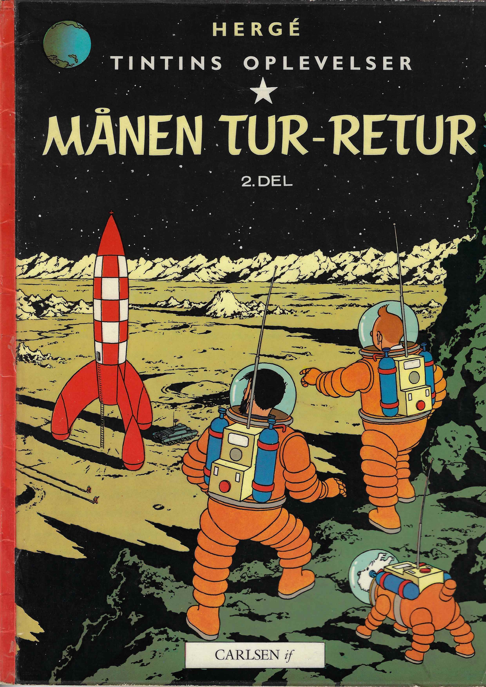
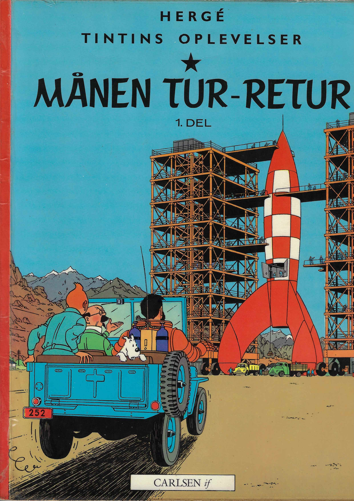
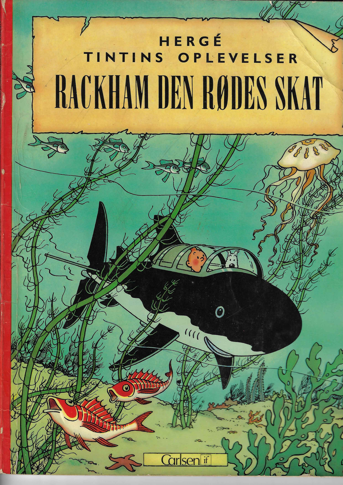
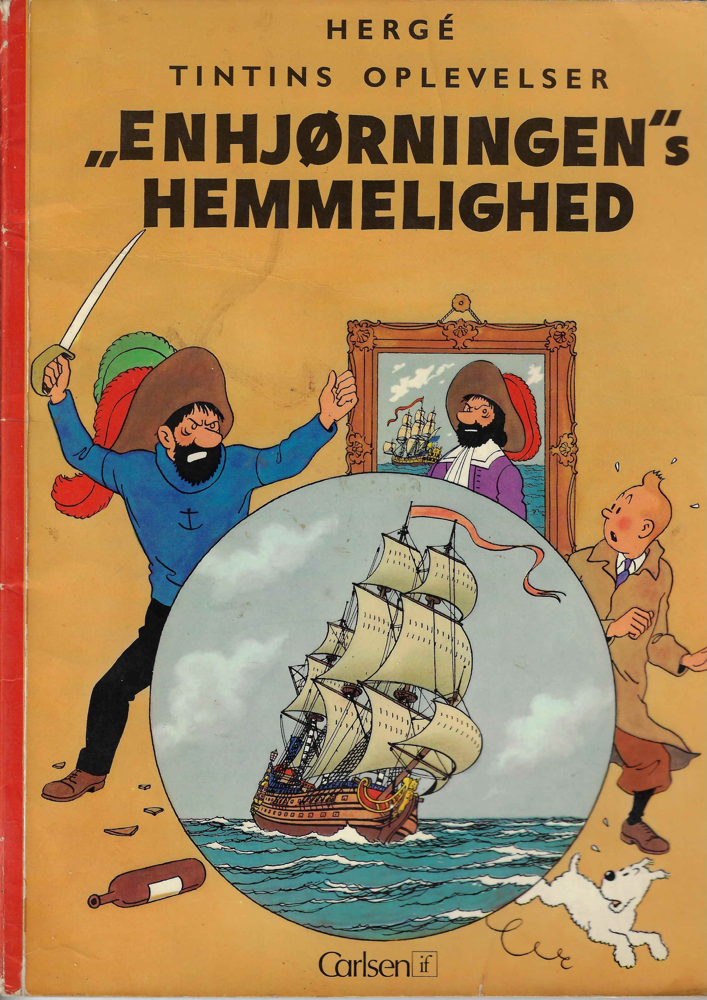
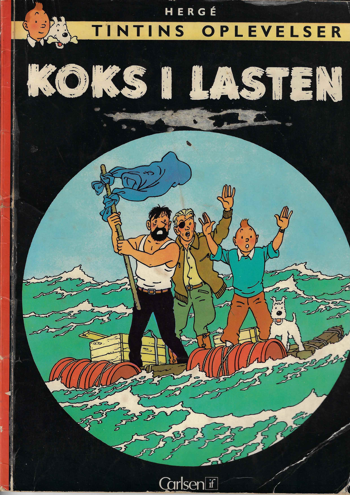

Profile
Experienced adventure reporter with over 30 years of professional experience in investigative journalism and international investigation. Has documented events across continents, uncovered criminal networks, and solved complex mysteries. Now seeking new challenges in an international context.
Core Competencies
- Investigation: Thorough research, evidence collection, network analysis
- Journalism: Investigative journalism, interviews, documentation, photojournalism
- Languages: French, English, Danish, German, Spanish, Russian, Mandarin
- International Experience: Global presence in 50+ countries
- Crisis Management: Calm under pressure, quick problem-solving
Professional Experience (Albums)

Adventure Reporter, Flight 714 to Sydney (2020)
- Uncovered international kidnapping plans against tycoon Laszlo Carreidas
- Navigated safely through Indonesian archipelago under extreme conditions
- Secured important documentation for the police

Adventure Reporter, Explorers on the Moon (2015)
- Rescued Captain Haddock from Moon dwellers
- Coordinated rescue operation with international space agency
- Returned safely after critical mission

Adventure Reporter, Destination Moon (2011)
- Participated in historic moon landing with rocket
- Investigated mineral resources on the Moon
- Worked under extreme pressure in spacecraft

Adventure Reporter, Red Rackham's Treasure (2007)
- Found and recovered historic pirate treasure
- Confronted criminal heirs
- Delivered valuable artifacts to museums

Adventure Reporter, The Secret of the Unicorn (2004)
- Investigated historic ships and pirates
- Discovered the secret behind three Unicorn models
- Uncovered international art theft ring

Adventure Reporter, The Crab with the Golden Claws (2000)
- Went undercover in the film industry
- Exposed fraud and deception in the entertainment industry
- Documented scams for a global audience
Languages
- French: Fluent (native)
- English: Fluent
- Danish: Basic
- German: Good
- Spanish: Good
- Russian: Basic
- Mandarin: Basic
Personal
Interested in architecture, music, and vintage cars. Active in the local community.
Owns a dog (Snowy) who always accompanies on adventures.
Education
Journalism & Communication
Université Libre de Bruxelles (1985–1990)